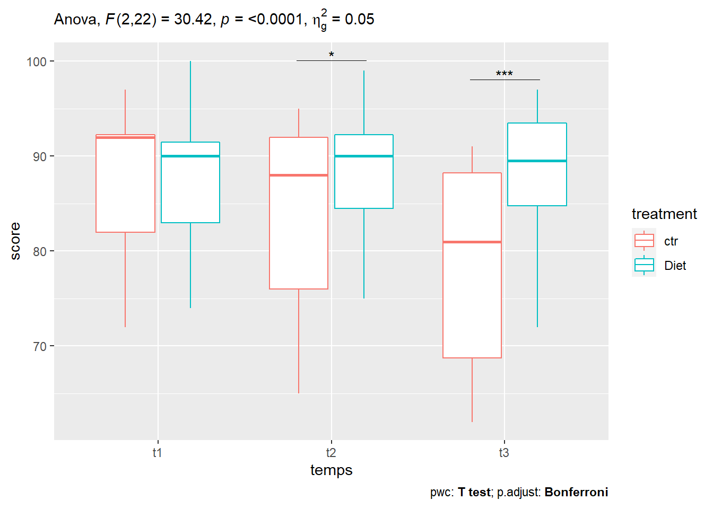

Chapitre 4 ANOVA à deux facteurs sur mesures répétées
4.1 Les librairies
library(tidyverse) # pour la manipulation et la visualisation des données
library(ggpubr) # pour créer facilement des graphiques prêts à la publication
library(rstatix) # contient des fonctions R facilitant les analyses statistiques
library(datarium) # contient les jeux de données requis pour ce chapitre4.2 Préparation des données
Nous utiliserons le jeu de données selfesteem2 [package datarium] qui contient les mesures de l’estime de soi de 12 personnes incluses à 2 essais successifs de court terme (4 semaines) :
- essais contrôle (placebo)
- et essais avec un régime alimentaire spécial.
Chaque participant a effectué les deux essais. L’ordre des essais a été contrebalancé et un délai suffisant a été respecté entre les essais pour que les effets des essais précédents puissent se dissiper.
Le score d’estime de soi a été enregistré à trois moments : au début (t1), à mi-chemin (t2) et à la fin (t3) des essais.
La question est de savoir si ce traitement diététique à court terme peut induire une augmentation significative de l’estime de soi avec le temps.
En d’autres termes, nous aimerions savoir s’il y a une interaction significative entre la diète et le temps sur le score de l’estime de soi.
L’ANOVA à deux facteurs sur mesures répétées peut être effectuée afin de déterminer s’il y a une interaction significative entre l’alimentation et le temps sur le score de l’estime de soi.
Charger et afficher une ligne aléatoire par groupe de traitement:
data("selfesteem2", package = "datarium")
set.seed(123)
selfesteem2 %>% sample_n_by(treatment, size = 3)## # A tibble: 6 x 5
## id treatment t1 t2 t3
## <fct> <fct> <dbl> <dbl> <dbl>
## 1 3 ctr 93 92 89
## 2 12 ctr 79 69 62
## 3 10 ctr 92 84 81
## 4 2 Diet 100 99 97
## 5 6 Diet 76 75 76
## 6 5 Diet 74 76 72Rassemblez les colonnes t1, t2 et t3 en format long. Convertir l’identifiant et le temps en facteurs.
selfesteem2 <- selfesteem2 %>%
gather(key = "temps", value = "score", t1, t2, t3) %>%
convert_as_factor(id, temps)Inspecter quelques lignes aléatoires des données par groupes
## # A tibble: 6 x 4
## id treatment temps score
## <fct> <fct> <fct> <dbl>
## 1 3 ctr t1 93
## 2 3 ctr t2 92
## 3 10 ctr t3 81
## 4 2 Diet t1 100
## 5 6 Diet t2 75
## 6 11 Diet t3 91**Dans cet exemple
l’effet du “temps” sur l’estime de soi est notre variable focale, c’est-à-dire notre première cible.
Cependant, on pense que l’effet “temps” sera différent si le traitement est effectué ou non. Dans ce contexte, la variable “traitement” est considérée comme variable modératrice.**
4.3 Statistiques descriptives
Regrouper les données par traitement (treatment) et temps (time), puis calculer quelques statistiques sommaires de la variable score : moyenne et sd (écart-type).
## # A tibble: 6 x 6
## treatment temps variable n mean sd
## <fct> <fct> <chr> <dbl> <dbl> <dbl>
## 1 ctr t1 score 12 88 8.08
## 2 ctr t2 score 12 83.8 10.2
## 3 ctr t3 score 12 78.7 10.5
## 4 Diet t1 score 12 87.6 7.62
## 5 Diet t2 score 12 87.8 7.42
## 6 Diet t3 score 12 87.7 8.144.4 Visualisation
Créez des boxplots du score colorée par groupes de traitement :

4.5 Vérifier les valeurs extrêmes aberrantes
## [1] treatment temps id score is.outlier is.extreme
## <0 rows> (or 0-length row.names)Il n’y a pas de valeurs extrêmes aberrantes.
4.6 Le modèle
lm <- anova_test(data = selfesteem2,
dv = score,
wid = id,
within = c(treatment, temps))
get_anova_table(lm)## ANOVA Table (type III tests)
##
## Effect DFn DFd F p p<.05 ges
## 1 treatment 1.00 11.00 15.541 2.00e-03 * 0.059
## 2 temps 1.31 14.37 27.369 5.03e-05 * 0.049
## 3 treatment:temps 2.00 22.00 30.424 4.63e-07 * 0.050Il existe une interaction statistiquement significative entre le traitement et le temps, F(2, 22) = 30,4, p < 0,0001.
Mais vérifions les hypothèses de validité de l’ANOVA.
4.7 Vérification des hypothèses
4.7.1 Hypothèse de normalité
Calculer le test de Shapiro-Wilk pour chaque combinaison de niveaux des facteurs :
## # A tibble: 6 x 5
## treatment temps variable statistic p
## <fct> <fct> <chr> <dbl> <dbl>
## 1 ctr t1 score 0.828 0.0200
## 2 ctr t2 score 0.868 0.0618
## 3 ctr t3 score 0.887 0.107
## 4 Diet t1 score 0.919 0.279
## 5 Diet t2 score 0.923 0.316
## 6 Diet t3 score 0.886 0.104Le score d’estime de soi est normalement distribué à chaque point dans le temps (p > 0,05), sauf pour le traitement ctr à t1, tel qu’évalué par le test de Shapiro-Wilk.
4.7.2 QQ-plot pour chaque cellule du plan
ggqqplot(selfesteem2, "score", ggtheme = theme_bw()) +
facet_grid(temps ~ treatment, labeller = "label_both")
D’après le graphique ci-dessus, comme tous les points se situent approximativement le long de la ligne de référence, nous pouvons supposer une normalité.
Les résultats de l’ANOVA sont donc valides.
## ANOVA Table (type III tests)
##
## Effect DFn DFd F p p<.05 ges
## 1 treatment 1.00 11.00 15.541 2.00e-03 * 0.059
## 2 temps 1.31 14.37 27.369 5.03e-05 * 0.049
## 3 treatment:temps 2.00 22.00 30.424 4.63e-07 * 0.0504.8 Tests post-hoc
Une interaction significative à deux facteurs indique que l’impact d’un facteur (p. ex., le traitement) sur la variable-réponse (p. ex., l’estime de soi) dépend du niveau de l’autre facteur (p. ex., le temps) (et vice versa). Ainsi, vous pouvez décomposer une interaction significative, à deux facteurs, en :
Effet principal : exécuter le modèle à un facteur avec la première variable (facteur A) à chaque niveau de la deuxième variable (facteur B),
Comparaisons par paires : si l’effet principal est significatif, effectuez plusieurs comparaisons par paires pour déterminer quels groupes sont différents.
Dans le cas d’une interaction à deux facteurs non significative, vous devez déterminer si vous avez des effets principaux statistiquement significatifs dans le résultat de l’ANOVA.
4.8.1 Procédure pour une interaction significative à deux facteurs
4.8.1.1 Effet du traitement à chaque instant
Dans notre exemple, nous analyserons l’effet du traitement sur l’estime de soi à chaque instant.
Notez que la variable treatment n’a que deux niveaux (“ctr” et “Diet”) ; ainsi, le test ANOVA et le test t apparié donneront les mêmes p-values.
one.way <- selfesteem2 %>%
group_by(temps) %>%
anova_test(dv = score, wid = id, within = treatment) %>%
get_anova_table() %>%
adjust_pvalue(method = "bonferroni")
one.way## # A tibble: 3 x 9
## temps Effect DFn DFd F p `p<.05` ges p.adj
## * <fct> <chr> <dbl> <dbl> <dbl> <dbl> <chr> <dbl> <dbl>
## 1 t1 treatment 1 11 0.376 0.552 "" 0.000767 1
## 2 t2 treatment 1 11 9.03 0.012 "*" 0.052 0.036
## 3 t3 treatment 1 11 30.9 0.00017 "*" 0.199 0.00051Comparaisons par paires entre les groupes de traitement
pwc <- selfesteem2 %>%
group_by(temps) %>%
pairwise_t_test(score ~ treatment, paired = TRUE, p.adjust.method = "bonferroni") %>%
select(temps, group1, group2, statistic, p, p.adj, p.adj.signif)
pwc## # A tibble: 3 x 7
## temps group1 group2 statistic p p.adj p.adj.signif
## <fct> <chr> <chr> <dbl> <dbl> <dbl> <chr>
## 1 t1 ctr Diet 0.613 0.552 0.552 ns
## 2 t2 ctr Diet -3.00 0.012 0.012 *
## 3 t3 ctr Diet -5.56 0.00017 0.00017 ***Si l’on considère la p-value corrigée de Bonferroni (p.adj), on peut voir que l’effet principal du traitement n’était pas significatif à t1 (p = 0.552). Elle devient significative à t2 (p = 0,012) et t3 (p = 0,00017).
Les comparaisons par paires montrent que le score moyen d’estime de soi est significativement différent entre le groupe ctr et le groupe Diet à t2 (p = 0,012) et t3 (p = 0,00017) mais pas à t1 (p = 0,55).
4.8.1.2 Effet du temps à chaque niveau de traitement
Notez qu’il est également possible d’effectuer la même analyse pour l’option temps variable à chaque niveau du traitement. Vous n’avez pas nécessairement besoin de faire cette analyse.
one.way2 <- selfesteem2 %>%
group_by(treatment) %>%
anova_test(dv = score, wid = id, within = temps) %>%
get_anova_table() %>%
adjust_pvalue(method = "bonferroni")
one.way2## # A tibble: 2 x 9
## treatment Effect DFn DFd F p `p<.05` ges p.adj
## <fct> <chr> <dbl> <dbl> <dbl> <dbl> <chr> <dbl> <dbl>
## 1 ctr temps 2 22 39.7 0.00000005 "*" 0.145 0.0000001
## 2 Diet temps 2 22 0.078 0.925 "" 0.000197 1Comparaisons par paires entre les points dans le temps
pwc2 <- selfesteem2 %>%
group_by(treatment) %>%
pairwise_t_test(score ~ temps, paired = TRUE, p.adjust.method = "bonferroni") %>%
select(treatment, group1, group2, statistic, p, p.adj, p.adj.signif)
pwc2## # A tibble: 6 x 7
## treatment group1 group2 statistic p p.adj p.adj.signif
## <fct> <chr> <chr> <dbl> <dbl> <dbl> <chr>
## 1 ctr t1 t2 4.53 0.000858 0.003 **
## 2 ctr t1 t3 6.91 0.0000255 0.0000765 ****
## 3 ctr t2 t3 6.49 0.0000449 0.000135 ***
## 4 Diet t1 t2 -0.522 0.612 1 ns
## 5 Diet t1 t3 -0.102 0.921 1 ns
## 6 Diet t2 t3 0.283 0.782 1 nsAprès avoir exécuté ces codes, vous pouvez voir que l’effet du temps n’est significatif que pour l’essai contrôle, F(2, 22) = 39.7, p < 0.0001. Les comparaisons par paires montrent que toutes les comparaisons entre les différents temps étaient statistiquement significatives pour l’essai contrôle.
4.8.2 Procédure pour une interaction non significative à deux facteurs
Si l’interaction n’est pas significative, il faut interpréter les principaux effets pour chacune des deux variables : treatment et temps. Un effet principal significatif peut être suivi par des comparaisons par paires.
Dans notre exemple (voir tableau ANOVA dans lm), il y avait un effet principal statistiquement significatif du traitement (F(1, 11) = 15,5, p = 0,002) et du temps (F(2, 22) = 27,4, p < 0,0001) sur le score de l’estime de soi.
4.8.2.1 Comparaisons par paires à l’aide du t-test apparié:
comparaisons pour la variable traitement
selfesteem2 %>%
pairwise_t_test(score ~ treatment, paired = TRUE, p.adjust.method = "bonferroni") %>%
select(group1, group2, statistic, p, p.adj, p.adj.signif)## # A tibble: 1 x 6
## group1 group2 statistic p p.adj p.adj.signif
## <chr> <chr> <dbl> <dbl> <dbl> <chr>
## 1 ctr Diet -4.35 0.000113 0.000113 ***comparaisons pour la variable temps
selfesteem2 %>%
pairwise_t_test(score ~ temps, paired = TRUE, p.adjust.method = "bonferroni")%>%
select(group1, group2, statistic, p, p.adj, p.adj.signif)## # A tibble: 3 x 6
## group1 group2 statistic p p.adj p.adj.signif
## <chr> <chr> <dbl> <dbl> <dbl> <chr>
## 1 t1 t2 2.86 0.009 0.027 *
## 2 t1 t3 3.70 0.001 0.004 **
## 3 t2 t3 3.75 0.001 0.003 **Toutes les comparaisons par paires sont significatives.
4.8.3 Rapporter
Nous pourrions rapporter le résultat comme suit :
Une ANOVA à deux facteurs sur mesures répétées a été effectuée pour évaluer l’effet de différents traitements diététiques sur l’estime de soi au fil du temps.
Il y avait une interaction statistiquement significative entre le traitement et le temps sur l’estime de soi, F(2, 22) = 30,4, p < 0,0001. Par conséquent, l’effet de la variable treatment a été analysé à chaque point de time. Les p-values ont été ajustées à l’aide de la méthode de correction des tests multiples de Bonferroni. L’effet du traitement était significatif à t2 (p = 0,036) et t3 (p = 0,00051), mais pas au temps t1 (p = 1).
Des comparaisons par paires, utilisant le test t apparié, montrent que le score moyen d’estime de soi était significativement différent entre l’essai ctr et l’essai Diet aux temps t2 (p = 0,012) et t3 (p = 0,00017) mais pas à t1 (p = 0,55).
4.8.4 Visualisation : Boxplots avec p-values
pwc <- pwc %>% add_xy_position(x = "temps")
bxp +
stat_pvalue_manual(pwc, tip.length = 0, hide.ns = TRUE) +
labs(subtitle = get_test_label(lm, detailed = TRUE), caption = get_pwc_label(pwc)
)